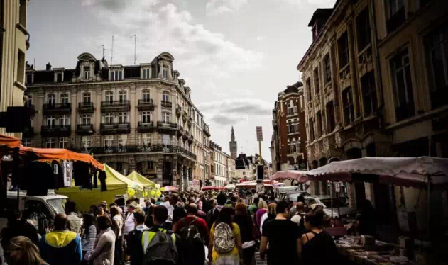

2015年欧洲必去的11大跳蚤市场，出国淘货可不能错过哦!
一个国家的跳蚤市场就是该国民族色彩、多元文化、市井民生的集合点，它所折射出的东西是非常丰富的，你要想深入了解这个国家，就一定要去看看他们的跳蚤市场。你会从器物本身体会了全球各地的历史人文，以及生活文化。快跟着妙姐一起去逛充满了惊奇的欧洲跳蚤与旧物市场吧！
法国里尔跳蚤市场
法国里耳Braderie de Lille FleaMarket，Lille, FRANCE

.jpg)
.jpg)
在这里可以买到：家具摆设、玻璃器皿、黑胶唱片、厨房用品、古典图书等最常见的商品，还有一些稀奇玩意儿和古董，物美价廉，如果你这个春节去法国旅行的话，千万不要错过里尔的跳蚤市场哦，说不定还能收获中世纪的物品哟～
德国慕尼黑跳蚤市场
Munich’sgiant flea market - Munich, GERMANY
.jpg)
.jpg)
在这里可以买到：中世纪的陶瓷，还有很多中国的物品哦，有中国的近代邮票，还有文化大革命中的很多邮票。运气好的话还能买到印刷精美的世界顶级著名画家们的画册，众所周知，德国的彩色印刷在世界排名榜首的。逛跳蚤市场时要睁大眼睛，找到自己喜欢的宝贝时，别忘了和摊主砍价哦！
阿姆斯特丹跳蚤市场
VrijmarktAmsterdam flea market，荷兰
.jpg)
在这里能买到：除了荷兰的特色商品外，还有非洲的桌巾、印尼长裙、峇里岛的木雕，此外，还有牛仔裤、鞋子、服饰、耳环、手镯、玩具、钟表、书籍、光碟等，让人眼花缭乱。滑铁卢广场的对外开放时间为周一至周五的9点00至17点30，周六为8点30至17点30，有机会就去逛逛哟。
莱法国巴黎－图安跳蚤市场
ClignancourtFlea Market (St-Ouen flea market) - Paris, FRANCE
.jpg)
在这里能买到：来到巴黎，一定要去逛逛圣 - 图安跳蚤市场，你可以挑选星期天这样的日子去，因为在星期天，巴黎所有的商场甚至超市都不会营业，大家都去圣 - 图安逛跳蚤市场了！这里有各种带有历史痕迹的物品，呈现在你眼前，你仿佛能看到它们在过去的时光。这里还有各国特色的旧货，大部分还带着光鲜亮丽的色彩。风格各异，南非的、埃及的、法兰西的等，挑得你眼花缭乱
莱法国巴黎－旺夫跳蚤市场
Vanves Flea Market - Paris, FRANCE


在这里能买到：绘画作品、陶瓷制品、银器、装饰品、六七十年代的老物件、古旧的军用物品、厨房用品、二手服装等，这里也许不是一个很好的游览景点，但是到这里的游客绝对会收获颇丰。摊商约350摊，小巧有序，别具亲和力，没有一间店铺，商贩们开着载货的卡车，露天搭蓬设摊，商品就陈列在地上或货架板上，而来这里淘宝逛市集的人们较多是巴黎人，阳光从林荫缝隙下筛落，轻松惬意地散着步赏觅旧物，少了一些紧张多了一份自在。
莱英国最好的跳蚤市场
Newark Antiques & Collectors Fair– IACF
.jpg)
.jpg)
在这里能买到：历史久远的瓷器，充满故事的唱片碟，古旧的军用物品、厨房用品、二手服装等。
莱维也纳中央市场跳蚤市场
.jpg)
.jpg)
在这里可以买到：捷克玻璃器皿、年代感十足的德国啤酒杯、古朴典雅的意大利老式挂灯、十八世纪的锡质器皿、法国的双筒望远镜……
阿丁莱古董和收藏博览会
西萨塞克斯郡，英国ArdinglyAntiques and Collectors Fair - West Sussex, UNITED KINGDOM
.jpg)
.jpg)
在这里可以买到：传统的古董，还有中世纪的收藏品，原始的日常用品、装饰以及设计类型，人们在此寻找不同寻常的家具和古怪的口音。总有让你惊喜的物品。
亚历山德拉宫古董和收藏博览会
AlexandraPalace Antiques & Collectors Fair - London, UNITED KINGDOM
.jpg)
.jpg)
在这里可以买到：很多精美的收藏品，雕像，画像，各类很有个性的衣服鞋子及饰品，当然还有这个国家的各色纪念品哦！
波特塞门跳蚤市场 - 罗马，意大利
PortaPortese Flea Market - Rome, ITALY
.jpg)
.jpg)
在这里可以买到：古老的留声机、精致的宝石胸针、形形色色的铜制器皿、洛可可风格的梳妆台、可能是爷爷的爷爷那一代留下来的古董自行车......波特塞门市场上数之不尽的古董、艺术品、手工制作以及生活用品让人目不暇接，能不能淘到好东西，就要靠大家的眼光与运气啦。
埃尔拉斯特洛跳蚤市场
El RastroFlea Markets - Madrid, SPAIN
.jpg)
.jpg)
在这里可以买到：设计新颖、款式独特的衣服或配饰，如果你喜欢设计感十足的饰品多话不妨来这里逛逛哦。而且这里还有古董旧玩意儿，衣服，杂货，是一个很有趣的淘宝地。